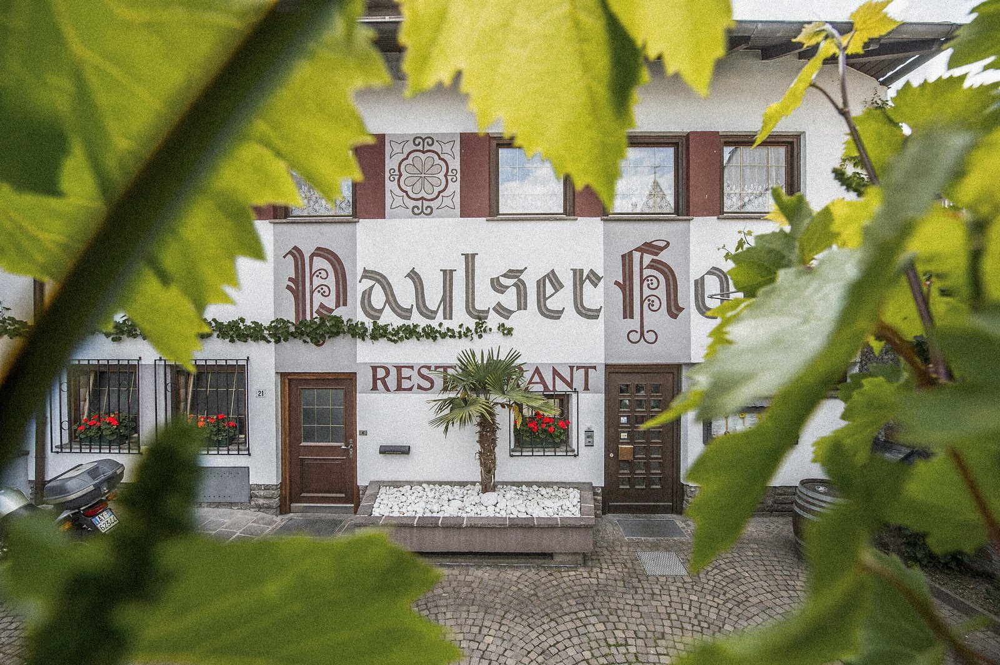

Wir kochen nicht mehr selbst, verraten euch aber gern, wohin wir zum Essen gehen: von der Pizza um die Ecke bis zum Aperitivo im historischen Ansitz.
 Genuss in der Nachbarschaft
Genuss in der Nachbarschaft
 Aperitivo-Stunde
Aperitivo-Stunde
 Pizza-Klassiker
Pizza-Klassiker
 Deftig & regional
Deftig & regional
 Törggelen-Zeit
Törggelen-Zeit



Pizza aus dem Holzofen, Grillklassiker und Südtiroler Küche in dritter Generation Familientradition, überdachte Terrasse ideal für Aperitif und laue Abende.


Mediterrane Küche und saftige Steaks vom Holzkohlegrill direkt am Golfplatz, Show-Küche, Pizza aus dem Steinofen und große Weinauswahl in lockerer Atmosphäre.